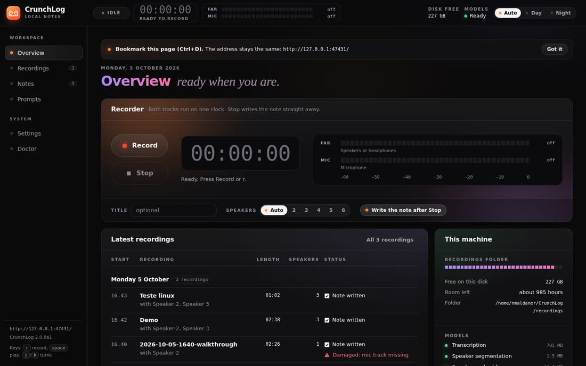
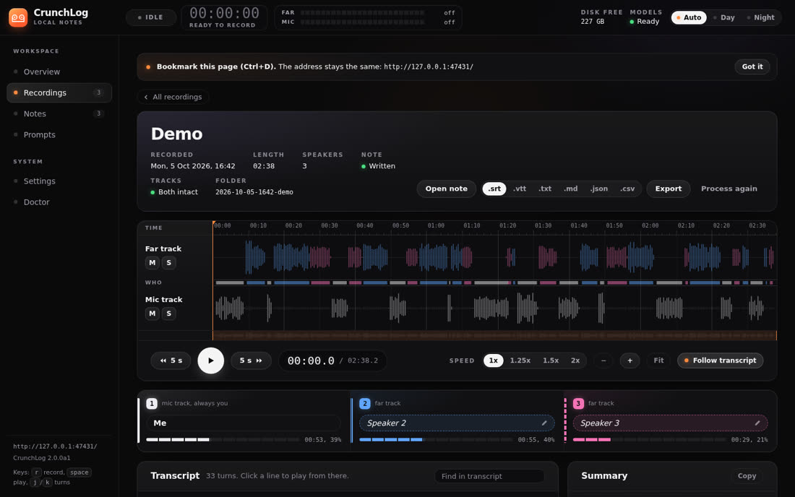
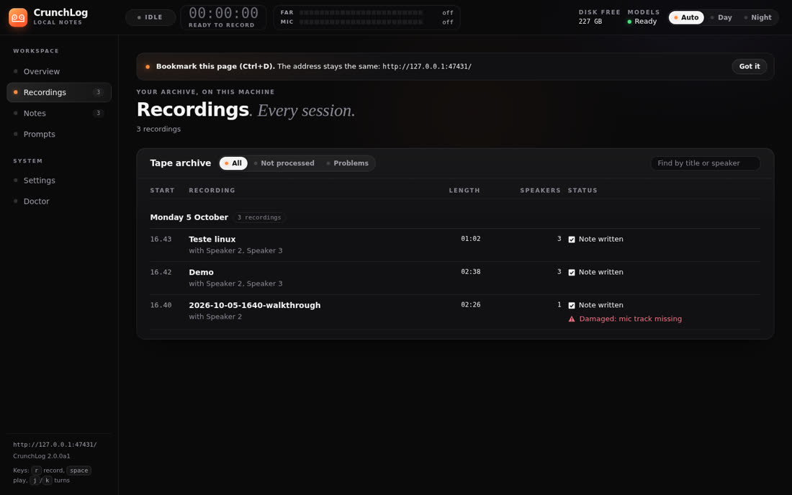
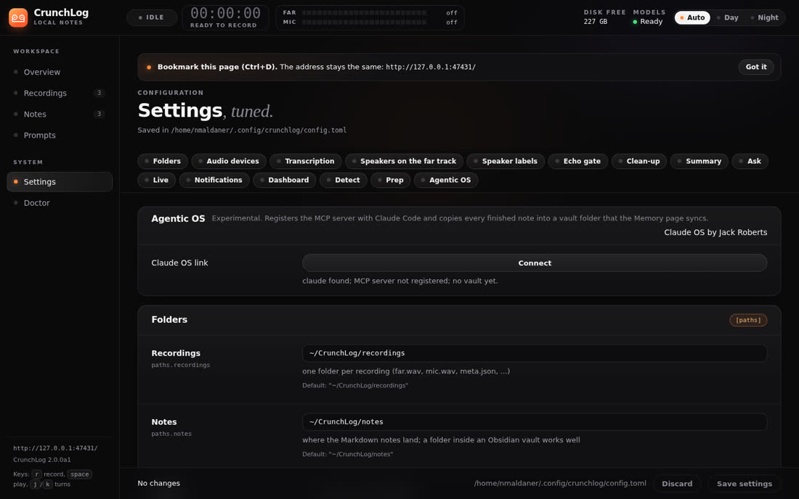
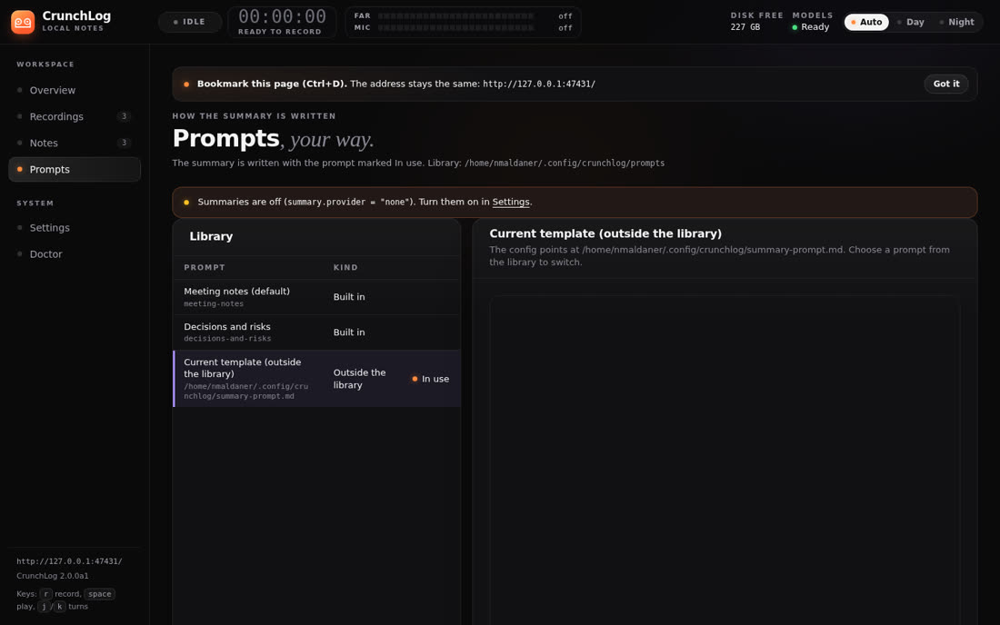
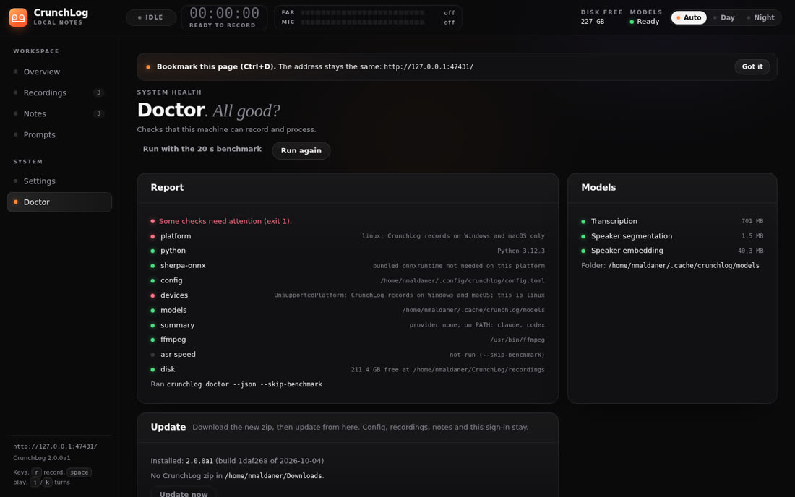

CrunchLog graba la llamada en dos pistas (lo que oyes y lo que dices), transcribe en tu CPU y entrega una nota en Markdown con cada intervención marcada por persona. Sin bot en la llamada, sin cuenta, sin clave de API.
Creado por Christian Landsteiner y presentado en la comunidad AI Automations by Jack (Skool). Versión probada aquí: 2.0.0a1. Esta guía y los scripts de Linux son de INEMA; el software no está en este repositorio porque la licencia de evaluación prohíbe redistribuirlo.
La salida de sonido (Zoom, Meet, YouTube) y el micrófono se graban por separado. Todo lo que viene del micrófono eres tú ("Me"); la IA solo tiene que separar a quienes están al otro lado. No necesita VoiceMeeter ni BlackHole.
Parakeet TDT 0.6B v2 y separación de hablantes con sherpa-onnx, todo en la CPU. Medido aquí: 27,6× el tiempo real, es decir, una llamada de 1 hora queda lista en unos 2 minutos.
El resumen, las decisiones, los ítems de acción y las preguntas sobre la reunión usan tu CLI de Claude Code o de Codex ya iniciada, sin API de pago. También hay servidor MCP e integración con Claude OS.
Cada grabación se convierte en una carpeta (el "bundle") con far.wav, mic.wav y meta.json. El pipeline local la transforma en la nota.
Queda en ~/CrunchLog/notes/, con frontmatter, resumen, decisiones, ítems de acción, preguntas abiertas y la transcripción con [mm:ss] Hablante:. Funciona bien dentro de una bóveda de Obsidian.
El audio y los bundles nunca salen de tu equipo. El texto solo sale si pides un resumen o ask, conectas un cliente MCP o activas el modo Live (que envía el audio a AssemblyAI). Modo totalmente privado: provider = "none".
Solo inglés en esta versión, ~700 MB de modelos que se descargan una vez, macOS 14.2+ en Apple Silicon. Todo lo que va más allá de grabar y generar la nota es experimental. En Linux, oficialmente solo corre el procesamiento; la grabación viene de nuestros scripts.
El zip está en el post de Skool (comunidad AI Automations by Jack). uv descarga Python 3.12 por sí solo.
Gestor de Python de Astral. Instálalo y abre una terminal nueva.
# Windows (PowerShell) powershell -ExecutionPolicy ByPass -c "irm https://astral.sh/uv/install.ps1 | iex" # macOS / Linux curl -LsSf https://astral.sh/uv/install.sh | sh
Windows 10/11 o macOS 14.2+ (Apple Silicon). Linux con PipeWire usando los scripts de este repositorio (probado en Ubuntu ARM64).
# Linux: revisa PipeWire which pw-record wpctl
ffmpeg para importar mp3/mp4. Claude Code o Codex con sesión iniciada, para resumen y preguntas.
claude --version codex --version ffmpeg -version
Comandos reales, probados en esta máquina. Los tiempos y números vienen de las ejecuciones del 05/10/2026.
Entra al post de Skool, descarga crunchlog-2.0.0a1.zip y descomprímelo. El camino más fácil, recomendado por el autor, es dejar que Claude Code lo instale: abre una terminal en la carpeta, ejecuta claude y pega:
I have extracted CrunchLog into this folder. Read START-HERE.md and AGENTS.md and install it for me, then run the demo so I get my first note.
Sigue el AGENTS.md del zip, te hace cuatro preguntas (carpeta de notas, dispositivo far, micrófono, proveedor de resumen) y termina con el demo. Si prefieres hacerlo a mano, sigue los pasos de abajo.
Dentro de la carpeta descomprimida. El [mcp] ya incluye el servidor MCP; usa ".[mcp,tray]" si quieres el ícono en la bandeja.
uv tool install --python 3.12 ".[mcp]" crunchlog --version # crunchlog 2.0.0a1 (build 1daf268 of 2026-10-04)
Si aparece command not found, ejecuta uv tool update-shell y abre otra terminal.
Escribe la config, el glosario y la plantilla de resumen, y descarga ~700 MB de modelos (Parakeet, silero, pyannote, TitaNet). Enter acepta los valores por defecto.
crunchlog devices # números de los dispositivos far y mic crunchlog setup # o: --yes --provider none (sin preguntas) crunchlog doctor # exit 0 y ningún [fail] = puedes grabar
En macOS, la primera grabación pide dos permisos para crunchlog-audio: Micrófono y Grabación de pantalla y audio del sistema. Sin el segundo, la pista far queda muda.
La voz del equipo representa una reunión inventada con tres personas y el pipeline real procesa todo. No necesita micrófono.
crunchlog demo # Windows / macOS crunchlog-linux demo # Linux (Piper), mira la sección Linux # turns: 33 turns, talk seconds per role {'Me': 53.8, 'Speaker 2': 55.5, 'Speaker 3': 29.0} # done in 57 s # note: ~/CrunchLog/notes/2026-10-05-1642-demo.md
Asigna crunchlog toggle a una tecla: PowerToys o AutoHotkey con crunchlogw toggle en Windows, un atajo de la app Atajos en macOS, o una acción del Stream Deck. Púlsala cuando empiece la llamada y otra vez cuando termine.
crunchlog toggle # empieza crunchlog toggle # se detiene y escribe la nota crunchlog start --slug acme --speakers 3 # nombre en la carpeta + total de personas (contigo) crunchlog check-audio --tone # prueba las dos pistas antes de la 1ª llamada
mp3, m4a, mp4 y wav entran como pista far (sin "Me"). Lo probamos con el walkthrough de 2:26 del autor: nota lista en 18 s.
crunchlog process reunion.mp4 crunchlog watch ~/Grabadora # procesa todo lo que caiga en la carpeta
En ~/.config/crunchlog/config.toml, cambia el proveedor. CrunchLog llama a claude -p (o codex) con herramientas y MCP desactivados, y esto sale de tu suscripción. Medido: resumen del demo en 10,3 s.
# config.toml [summary] provider = "claude" # none | claude | codex | auto claude_model = "opus" claude_effort = "medium" crunchlog ask latest "What was decided about the beta launch?" # The beta starts on November 12 with 200 testers ... [01:13 Me]
Ponles nombre a los hablantes, agrega tus anotaciones, exporta subtítulos o abre en Obsidian.
crunchlog speakers <grabación> "Speaker 2=Dana" "Speaker 3=Lee" crunchlog note "el cliente quiere la propuesta para el viernes" crunchlog export ~/CrunchLog/recordings/<grabación> --format srt # srt|vtt|txt|json|csv|md crunchlog templates use standup crunchlog open latest --obsidian
Reúne en una hoja los ítems de acción abiertos, las decisiones y las preguntas de las últimas notas de un cliente, con preguntas guía que se marcan solas cuando la próxima nota las responde. No llama a ningún modelo.
crunchlog prep "acme" --calendar "Jue 14h, Ana y Bruno" # ~/CrunchLog/notes/2026-10-05-acme-cheatsheet.md
Grabador con medidores, forma de onda de las dos pistas, transcripción clicable, renombrar hablantes, prompts, configuración y doctor. Solo escucha en 127.0.0.1. En la primera visita, usa el enlace con ?t=... que imprime.
crunchlog dashboard # http://127.0.0.1:47431/ (--port lo cambia)
Después de registrarlo, pregunta "¿qué acordamos con Acme el martes?" o "empieza a grabar". Lo probamos por stdio y el servidor respondió con 15 herramientas: status, list_recordings, get_transcript, get_note, get_summary, search_notes, prep, cheatsheet, start/stop/toggle_recording, process, rename_speakers, export y doctor.
claude mcp add crunchlog -- crunchlog mcp
Si usas el Claude OS de Jack Roberts (clase del Agentic OS, solo para miembros), un comando registra el MCP y crea una bóveda que la página Memory sincroniza:
crunchlog connect agentic-os --dry-run # muestra lo que va a hacer crunchlog connect agentic-os # --status | --undo
Envía las dos pistas a AssemblyAI (tu cuenta, de pago) y muestra durante la llamada la hoja de apoyo marcándose, resúmenes por bloque y un "pregúntale a la reunión". La nota final sigue saliendo del pipeline local. No lo actives en llamadas confidenciales.
[live] enabled = true provider = "assemblyai" api_key = "..." # tu clave
La versión 2.0.0a1 solo graba en Windows y macOS. En Linux, el procesamiento corre completo (transcripción, hablantes, nota, resumen, ask, export, prep, dashboard y MCP) y las dependencias se instalaron sin parches en ARM64. Faltaban dos piezas, y escribimos las dos sin modificar el código de CrunchLog.
Graba con pw-record de PipeWire: monitor de la salida predeterminada → far.wav y entrada predeterminada → mic.wav, a 16 kHz mono, con meta.json según el contrato oficial (bundle v2). Al detener, llama al pipeline oficial.
El mismo crunchlog demo (mismo guion, mismo montaje, mismo pipeline), solo cambiando la voz del sistema por Piper, que funciona sin conexión. Probado: 33 intervenciones, "Me" separado de Speaker 2 y 3, en 57 s.
Atajo con demo, start, stop, toggle, status y devices. Asigna crunchlog-linux toggle a un atajo de GNOME o KDE.
# 1. CrunchLog (en la carpeta del zip) + modelos uv tool install --python 3.12 ".[mcp]" crunchlog setup --yes --provider none # 2. extras de este repositorio: Piper + 3 voces (~190 MB) + crunchlog-linux en ~/.local/bin git clone https://github.com/inematds/crunchlog bash crunchlog/linux/instalar-extras-linux.sh # 3. usar crunchlog-linux demo crunchlog-linux devices # far (monitor de la salida) y mic (entrada) crunchlog-linux toggle # empieza / se detiene + nota CRUNCHLOG_FAR_TARGET=<sink> CRUNCHLOG_MIC_TARGET=<source> crunchlog-linux start # otras tarjetas (wpctl status)
El crunchlog doctor en Linux muestra dos [fail] (platform y devices). Son solo de la grabación nativa, que crunchlog-linux reemplaza. Todo lo demás da [ok]. El botón Record del dashboard no funciona en Linux, pero las grabaciones hechas con el script aparecen y se reproducen con normalidad allí.
Capturas del 05/10/2026, con el demo (reunión inventada) y las grabaciones de prueba hechas en Linux.






Del README del autor y de lo que encontramos en las pruebas.